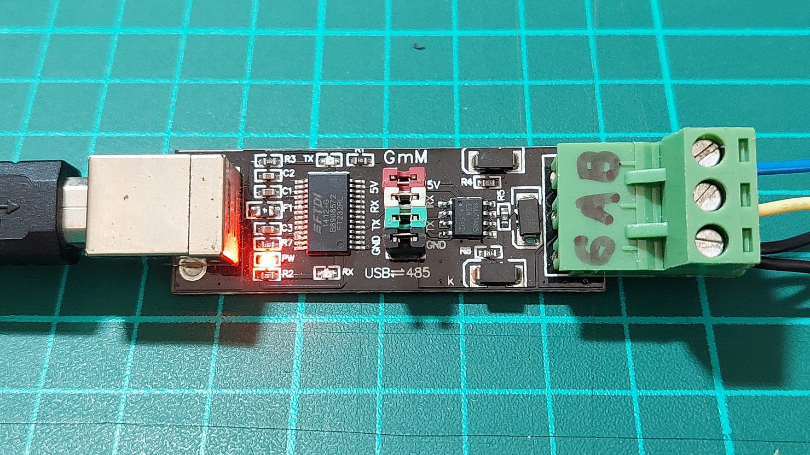

การใช้งานโมดูลสื่อสาร RS485 Transceiver#
บทความนี้กล่าวถึง การใช้งานโมดูลสื่อสาร RS485 สำหรับคอมพิวเตอร์หรือบอร์ดไมโครคอนโทรลเลอร์ และการเขียนโค้ด Python เพื่อลองส่งข้อมูลไบต์ออกไป
Keywords: RS485 Transceiver, Python, PySerial
▷ การสื่อสารด้วย RS485#
RS485 หรือรู้จักกันในชื่อ TIA-485(-A) หรือ EIA-485 เป็นมาตรฐานสำหรับการสร้างสัญญาณทางไฟฟ้าเพื่อสื่อสารแบบบิตอนุกรม-อะซิงโครนัส (ไม่มีการสร้างสัญญาณ Clock เพื่อการสื่อสารข้อมูล ซึ่งเหมือนกรณีของ Serial/UART) ระหว่างอุปกรณ์ที่เชื่อมต่อกันแบบหลายจุด (Multi-point หรือ Multi-drop) ในระบบบัส
RS485 รองรับการสื่อสารได้ระยะห่างถึง 1200 เมตร และอัตราในการส่งหรือรับข้อมูลบิตได้สูงถึง 10Mbps แต่โดยปรกติแล้วก็จะเลือกใช้ค่า 9600 ถ้ามีระยะห่างระหว่างโมดูลค่อนข้างไกล เป็นต้น
RS485 ใช้สายสัญญาณหนึ่งคู่ ได้แก่ A+ (non-inverting) และ B- (inverting) และเป็นการใช้สัญญาณไฟฟ้าสื่อสารแบบ Differential Signaling เพื่อลดปัญหาของสัญญาณรบกวนจากภายนอกในขณะที่มีการรับส่งข้อมูล
ผลต่างของทั้งสองสัญญาณ (เปรียบเทียบแรงดัน กับ มากกว่าหรือน้อยกว่ากัน) และต่างกันอย่างน้อย 200mV เมื่อวัดสัญญาณที่ตัวรับ จะเป็นตัวกำหนดค่าบิต 0 หรือ 1
- ถ้า จะเป็นลอจิก 0
- ถ้า จะเป็นลอจิก 1
ถ้าใช้สายสัญญาณเพียงหนึ่งคู่ การสื่อสารด้วย RS485 จะเป็นแบบ Half-Duplex กล่าวคือ ในแต่ละช่วงเวลาอุปกรณ์จะรับหรือส่งข้อมูลได้เท่านั้น (ไม่สามารถรับและส่งข้อมูลไบต์ในเวลาเดียวกันได้) แต่ถ้าใช้สัญญาณสองคู่ ก็สามารถทำงานแบบ Full-Duplex ได้
รูป: การเชื่อมต่อระหว่างอุปกรณ์ด้วย RS485 Half-Duplex (Source: TI)
รูป: การใส่ตัวต้านทานที่ปลายทั้งสองด้าน (เรียกว่า Termination Resistance หรือ ขนาด 120 โอห์ม) และการใส่ตัวต้านทาน () สำหรับ Failsafe Biasing (Source: TI)
เอกสารอ้างอิงและศึกษาเพิ่มเติมในรายละเอียด
- TI, Application Report: The RS-485 Design Guide
- TI, Technical White Paper: RS-485 Basics Series
- Renesas, White Paper, RS-485 Transceiver Tutorial
▷ RS485 Transceiver#
ในการส่งหรือรับสัญญาณด้วย RS485 จะต้องใช้ไอซีที่เรียกว่า RS485 Transceiver เช่น
- MAX485 และ MAX13485/MAX13486 (Maxim Integrated / Analog Devices Inc.)
- SP3485EN (Exar / Maxlinear)
ไอซีประเภทนี้ประกอบด้วยตัวส่ง (Driver) ที่ทำหน้าที่แปลงข้อมูลบิตให้เป็นสัญญาณ A และ B และตัวรับ (Receiver) ที่แปลงสัญญาณทั้งสองให้เป็นข้อมูลบิต และรองรับการใช้งานแบบ Half-Duplex เท่านั้น
โดยทั่วไป ไอซี RS485 Transceiver มี 8 ขา ดังนี้
- VCC (Supply Voltage): แรงดันไฟเลี้ยงสำหรับไอซี (ต้องตรวจสอบดูด้วยว่า ใช้ได้เฉพาะ 5V เท่านั้น หรือใช้แรงดันไฟเลี้ยง 3.3V ได้ด้วย)
- GND (Ground): กราวนด์ของไอซี
- DI (Driver Input, Input Direction): สัญญาณดิจิทัล-อินพุตสำหรับวงจรตัวส่งภายในไอซี
- RO (Receiver Output, Output Direction): สัญญาณดิจิทัล-เอาต์พุตจากวงจรตัวรับภายในไอซี
- DE (Driver Output Enable, Input Direction, Active-High): สัญญาณควบคุมสำหรับการทำงานของตัวส่ง
- /RE (Receiver Enable Input, Input Direction, Active-Low): สัญญาณควบคุมสำหรับการทำงานของตัวรับ
- A+ (Non-inverting I/O, Bi-directional)
- B- (Inverting I/O, Bi-directional)
ตัวอย่างฟังก์ชันการทำงานของไอซี SP3485EN มีดังนี้
รูป: SP3485EN Transceiver IC
ไอซี SP3485 ใช้แรงดันไฟเลี้ยง 3.3V ±5% และใช้กับแรงดันลอจิก 5V ได้
การทำงานของวงจรตัวส่งหรือวงจร "ไดรเวอร์"
- สัญญาณควบคุมของวงจรตัวส่ง (D) คือ DE = Driver Enable (Active-High)
- ถ้า DE = High (Logic '1') วงจรตัวส่งจะขับสัญญาณเอาต์พุตที่ขา A และ B
- ถ้า DE = Low (Logic '0') วงจรตัวส่งจะไม่ทำงานและสัญญาณเอาต์พุตจะอยู่ในสถานะ Tri-state (High-Impedance 'Z')
- แรงดัน Common Mode Output Voltage ที่ขา A+ และ B- จะอยู่ที่ระดับ VCC/2 โดยทั่วไป แต่มีผลต่างของแรงดันไฟฟ้าที่ขาทั้งสองอย่างน้อย 1.5V
การทำงานของวงจรตัวรับ
- สัญญาณควบคุมของตัวรับ (R) คือ /RE = Receiver Enable (Active-Low)
- ถ้า /RE = High (Logic '1') วงจรตัวรับจะไม่ทำงาน
- ถ้า /RE = Low (Logic '0') วงจรตัวรับจะทำงาน โดยตรวจสอบผลต่างของแรงดันไฟฟ้าระหว่างสัญญาณ A+ และ B- ซึ่งจะต้องมีผลต่างไม่น้อยกว่า +/-200mV และได้สัญญาณลอจิกเป็นเอาต์พุต (Receiver Output: RO)
- ตัวรับมักมีฟังก์ชันสำหรับ Failsafe ในกรณีที่ไม่มีสัญญาณ A+ และ B- เชื่อมต่อ (มีสถานะเป็น Tri-state) และเอาต์พุตของตัวรับจะได้ค่าลอจิกเป็น High
- มีอิมพีแดนซ์ของอินพุต (Input Impedance) ของวงจรตัวรับ ระหว่างขา A+ กับ B- มีค่าอย่างน้อย 12kΩ
- ตัวรับสามารถทนต่อแรงดัน Common Mode Voltage (CMR) ที่ขา A+ และ B- (หรือ ) ได้ในช่วง -7V .. +12V (หรือกว้างกว่า)
ถ้า /RE=1 และ DE=0 จะทำให้ SP3485 จะเข้าสู่โหมดประหยัดพลังงาน Shutdown Mode
รูป: ขาของไอซี SP3485EN และฟังก์ชันการทำงาน
โมดูล RS485 Transceiver แบ่งได้เป็น 2 กลุ่มตามลักษณะการใช้งานขา I/O สำหรับการเชื่อมต่อกับไมโครคอนโทรลเลอร์
- ประเภทแรกซึ่งมีขา DE, /RE, DI, RO
- VCC, GND (Supply Voltage)
- A+, B- (RS485 Differential Signal Pair)
- DE (Driver Enable, Active-High)
- /RE (Receiver Enable, Active-Low)
- DI (Driver Input)
- RO (Receiver Output)
- ประเภทที่สองซึ่งมีขา TX, RX และเนื่องจากว่า มีวงจรควบคุมการเปลี่ยนทิศทางการรับส่งข้อมูลโดยอัตโนมัติ
(Automatic Flow / Direction Control)
จึงใช้งานได้สะดวกกว่า เหมือนการสื่อสารข้อมูลกับโมดูล Serial (TTL Logic) โดยทั่วไป
- VCC, GND (Supply Voltage)
- A+, B- (RS485 Differential Signal Pair)
- TX (Serial Out)
- RX (Serial In)
องค์ประกอบของโมดูล USB-to-RS485 ที่สำคัญได้แก่
- ไอซีหรือวงจร USB-to-Serial Bridge เช่น FT232RL, CH340/341 เป็นต้น
- ไอซี RS485 Transceiver
- คอนเนกเตอร์เชื่อมต่อ เช่น Terminal Blocks สำหรับสัญญาณ A+ และ B- และ GND
- คอนเนกเตอร์สำหรับ USB
- ฟิวส์ป้องกันกระแสเกิน (เป็นประเภทที่เรียกว่า Polyfuse) และวงจรป้องกันแรงดันเกินช่วงที่กำหนดไว้ เช่น การใช้ไดโอดประเภท TVS (Transient Voltage Suppression)
- มักมีการใส่ตัวต้านทาน 120Ω (Termination Resistor) มาให้แล้ว
ข้อสังเกต: ในการใช้งานอุปกรณ์ USB-to-RS485 อย่าลืมติดตั้งไดรเวอร์สำหรับระบบปฏิบัติการ Windows 10/11 ด้วย ซึ่งจำแนกตามไอซี USB-to-Serial Bridge ของแต่ละผู้ผลิต เช่น ชิปของ WCH (CH34x) FTDI (FT232RL) และ Silicon Labs (CP210x)* เป็นต้น
แต่ถ้าเป็นโมดูล Serial-RS485 ด้านหนึ่งจะมีขา VCC (3.3V ~ 5V), GND, TX และ RX สำหรับนำไปต่อกับไมโครคอนโทรลเลอร์ และอีกด้านหนึ่งมีขา A+, B- และ GND สำหรับนำไปต่อเข้ากับบัส RS485
รูป: ตัวอย่างโมดูล Serial-to-RS485
รูป: ตัวอย่างผังวงจร
ถ้าจะทดลองใช้โมดูล Serial-to-RS485 กับคอมพิวเตอร์ผู้ใช้ ให้นำโมดูล USB-to-Serial Bridge มาต่อเพิ่ม โดยมีจุดเชื่อมต่อสัญญาณ TX และ RX ให้เชื่อมต่อกราวนด์ร่วมกัน และป้องแรงดันไฟเลี้ยง
รูป: ตัวอย่างการใช้งานร่วมกันระหว่างโมดูล USB-to-Serial Bridge และโมดูล Serial-to-RS485
▷ ตัวอย่างโค้ด Python เพื่อทดลองส่งข้อมูล#
การใช้งานโมดูล RS485 เพื่อรับส่งข้อมูลผ่านทาง USB ก็มีลักษณะการใช้งานเหมือนการใช้งานโมดูล USB-to-Serial ดังนั้นจึงสามารถใช้ไลบรารี PySerial ได้
คำสั่งสำหรับการติดตั้ง PySerial มีดังนี้
$ pip3 install pyserial
ตัวอย่างโค้ด Python 3 ที่ PySerial สำหรับการลองส่งข้อมูลไบต์
0x55 ด้วยความเร็ว (Baudrate) เท่ากับ 9600
import serial
# Print the version (tested with Pyserial v3.5)
print(f"PySerial version: {serial.__version__}")
# Specify the serial port (e.g. /dev/ttyUSB0 for Linux)
portName = '/dev/ttyUSB0'
# Set the baudrate
baudrate = 9600
ser = serial.Serial( portName, baudrate )
ser.write( b'\x55' )
# Close the serial port
ser.close()
ลองดูการวัดสัญญาณ A และ B ของโมดูลที่นำมาใช้งาน

รูป: ตัวอย่างโมดูล USB-to-RS485 ที่ใช้ชิป FT232RL
รูป: การวัดสัญญาณ A และ B ขณะที่มีการส่งข้อมูลหนึ่งไบต์ออกไป
รูป: ตัวอย่างโมดูล USB-to-RS485 ที่ใช้ชิป CH340
รูป: การวัดสัญญาณ A และ B ขณะที่มีการส่งข้อมูลหนึ่งไบต์ออกไป
▷ กล่าวสรุป#
บทความนี้ได้นำเสนอหลักการทำงานของระบบบัส RS485 ในเบื้องต้น ได้ยกตัวอย่างโมดูล USB-to-RS485 และ Serial-to-RS485 ที่ได้เลือกมาทดลองใช้งาน พร้อมตัวอย่างการวัดสัญญาณ A และ B ด้วยออสซิลโลสโคป
This work is licensed under a Creative Commons Attribution-ShareAlike 4.0 International License.
Created: 2024-01-17 | Last Updated: 2024-01-20